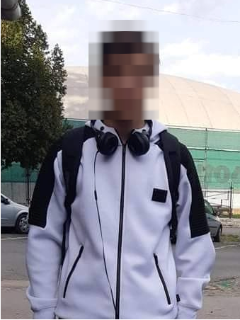

Önéletrajz

Személyes adatok
Név:Pataky B Gábor
Születési idő: 1993.06.25
Telefonszám:06 70 708 7898
E-mail: patakygabor.@gmail.com
Tanulmányok
2016-2020 Neumann János Informatikai Kar
2010-2016 BMSZC Pataky István Híradásipari és Informatikai Technikum
2002-2010 Budapest XXIII. Kerületi Mikszáth Kálmán Általános Iskola
Munka tapasztalat
2019-2020 webfejlesztő Coca-cola Magyarország Kft
Nyelviismeret
Angol:középfok
Egyéni készségek
2002-2009 Aktív kosárlabdázás
Hobbi
Úszás
Kerékpározás
Számítógép szerelés